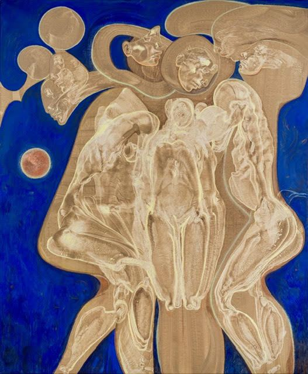
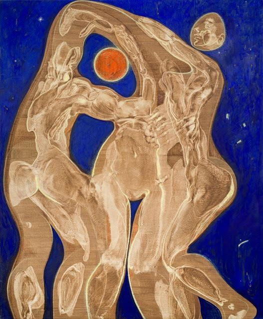
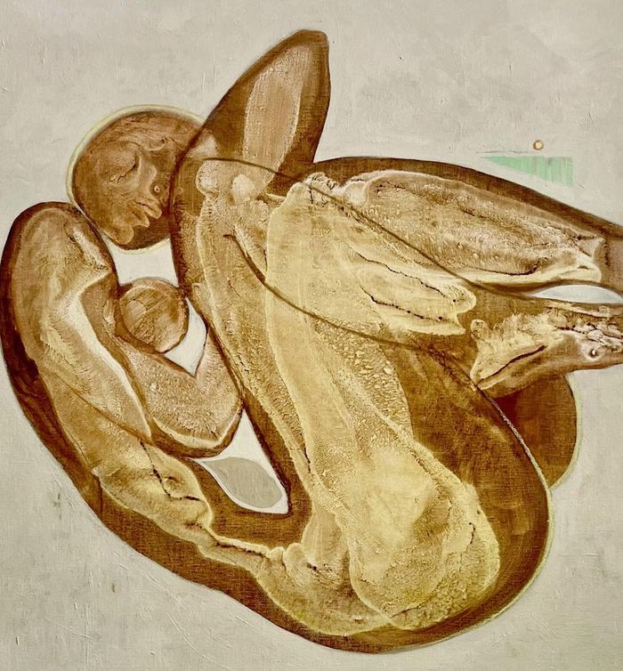
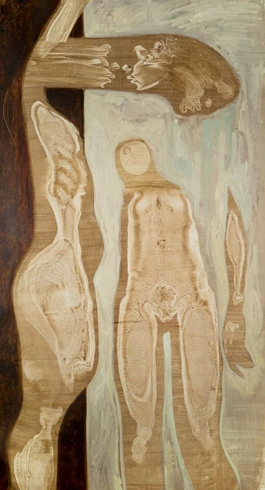
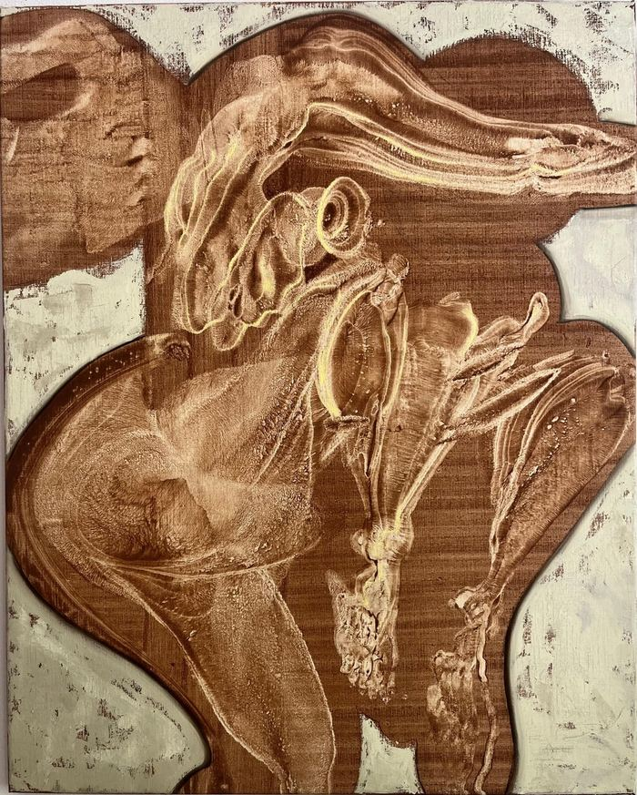
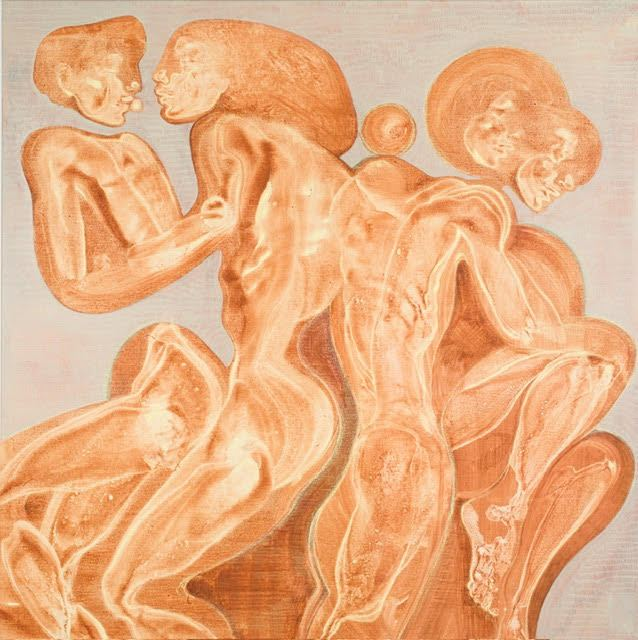
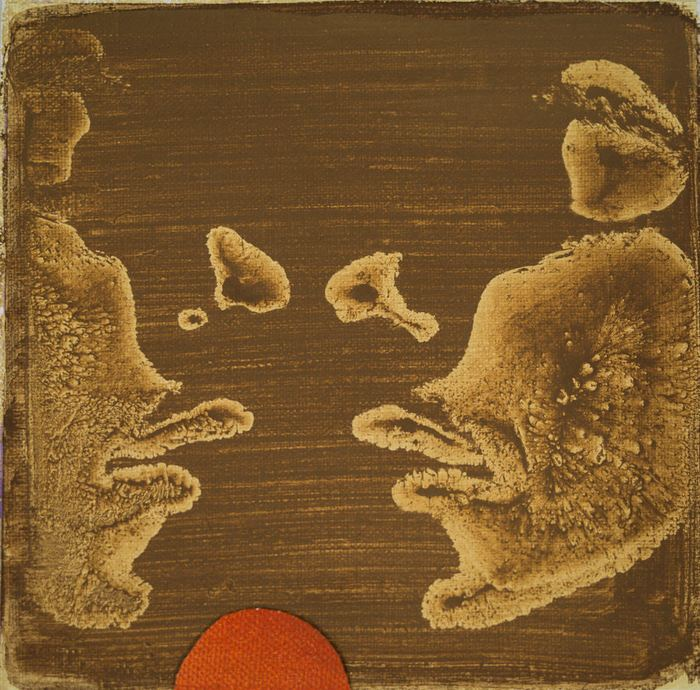
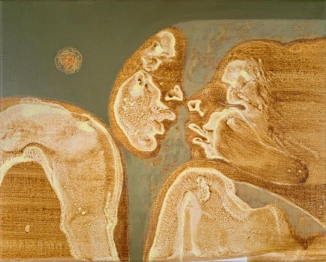

Season 02 — GROUNDGallery 4 — wallsAll makers →
Loutje Hoekstra
Loutje Hoekstra (1994) is an Amsterdam-based artist with a background in biology. Her practice unfolds through painting, performance and illustration, revolving around the human body in its continuous search for belonging.
Instagram · Message Loutje directly
100% of the sale proceeds go to the maker. Loutje Hoekstra works independently, without gallery representation.
—Works9 recorded

Pigments, oil, oil stick on linen · 80 x 100 cm · 2026
€ 2.500,– available

Pigments, oil, oil stick on linen, framed · 140 x 170 cm · 2025
€ 4.200,– available

Pigments, oil, oil stick on linen, framed · 140 x 170 cm · 2025
€ 4.200,– available

Pigments, oil, oil stick on linen · 90 x 90 cm · 2025
€ 2.500,– available

Pigments, oil, oil stick on linen · 80 x 150 cm · 2025
€ 3.100,– available

Pigments, oil, oil stick on linen · 80 x 100 cm · 2026
€ 2.500,– available

Pigments, oil, oil stick on linen · 140 x 140 x 4 cm · 2025
€ 3.400,– available

Acrylic, pigments, colored canvas on linen · 19 x 19 cm · 2025
€ 300,– available

Pigments, oil, oil stick on linen · 40 x 50 x 4 cm · 2025
€ 1.100,– available